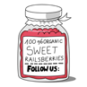

Cześć Kraków!
Rails Girls goes Krakow: join the two-day bake off to the exciting world of building web applications with Ruby on Rails, with some jam-making action with fellow Railsberry attendees.
The applications for 2012 are closed. The 2015 RailsGirlsKrakow is here.
You learn designing, prototyping and coding with the help from our coaches.
You need your own laptop, curiosity and a sprinkle of imagination!
Want to help? We are looking for volunteers and Rails coaches. Email us.
| 18.00 - |
Installation partyGet know the attendees a little bit before hand. Bring your laptop if you can, so we can install Ruby on Rails for you. |
|---|---|
| 21.00 - |
Coach dinnerAll of the coaches are welcome to our coach dinner, where we'll go through the program for the next day. |
| 9:00 - 10:00 |
Registration, coffee and installation festDuring the morning we’ll install Ruby on Rails on your computer, if there has been problems before, get to know each other and have some coffee. |
|---|---|
| 10:00 - 10:15 |
WelcomeOutline of the day & word from sponsors. |
| 10:20 - 10:45 |
Designing your web app -workshopBy Karri Saarinen |
| 10:50 - 11:10 |
Tryruby.orgLet's get coding! |
| 11:10 - 13:00 |
WORKSHOPJumpstart your first web application |
| 13:00 - 13:30 |
LunchJumpstart your first web application |
| 13:30 - 14:30 |
Lightning TalksAgata MazurMonika Konieczny Sebastian Grössl Constantin Hofstetter Przemek Hocke Bentobox. Recap of what we’ve learned and how it all fits together. |
| 14:30 - 16:00 |
WORKSHOPExtend your application. |
| 16:30 - 17:00 |
Lightning talksKarolina SzczurBasia S Ewa Macias Anna Migas Ula Reczek Ewelina Kroczek |
| 21:00 - |
AfterpartyMixed with Railsberry Preparty. Open for everyone, meet cool people interested in tech. Location: Shakers club, Szewska 5 (second floor) |
Applications close: April 1st
Acceptances informed: April 3rd
Location: Applicake HQs at
Marii Skłodowskiej-Curie 5/3b, 31-025 Kraków, Poland See map
Rails Girls Kraków is co-organized with our awesome partners.
Want to help? We're looking for partners & sponsors!
Google everyone of course knows. They are also recruiting new people, so be sure to subscribe to their form aimed for the Rails Girls attendees.
Applicake is our friend when it comes to application architecture design, development and maintenance. They love well-written code, playing with APIs and modern browsers. Why we love them? Check out their crazy projects.
 Lunar Logic was Poland's first Rails shop. We've been at the heart of the Rails community in Poland since 2005. We're thrilled to be able to help RailsGirls introduce more people to the lovely land that is Rails.
Lunar Logic was Poland's first Rails shop. We've been at the heart of the Rails community in Poland since 2005. We're thrilled to be able to help RailsGirls introduce more people to the lovely land that is Rails.
 Railsberry is the sweetest treat for anyone who shares our passion for dynamic languages such as Ruby and Javascript and their frameworks - Rails, Node and the yet uncooked frameworks of the future.
Kippt makes it easy to save, search and read the information you find on the web.
 WebMuses is a Krakow-based community for girls who want to explore what working in IT might look like. We organise monthly meetings, talks and workshops to inspire, educate and make your eyes light up.
WebMuses is a Krakow-based community for girls who want to explore what working in IT might look like. We organise monthly meetings, talks and workshops to inspire, educate and make your eyes light up.
Mislav Marohnić's blog 6.5.2012
Rails Girls in Railsberry blog 15.3.2012
Gazeta.pl 18.4.2012
How much does the workshop cost? Nothing, it's free! You just need to be excited!
Who is this aimed for? Women of any age with basic knowledge of working with a computer. We’ve had people of all ages taking part. Most of the program is run in english and please bring your laptop.
Can men attend? Yes, but you need to be accompanied by an interested lady. Also, girls are given a priority.
I know how to program - How can I help? We’re also looking for people to be coaches. We’ll have a two-three hour workshop before the event to walk you through the curriculum. Email us